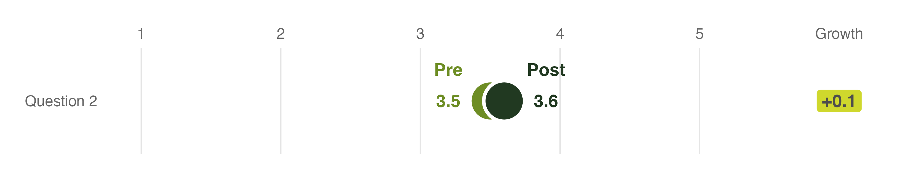
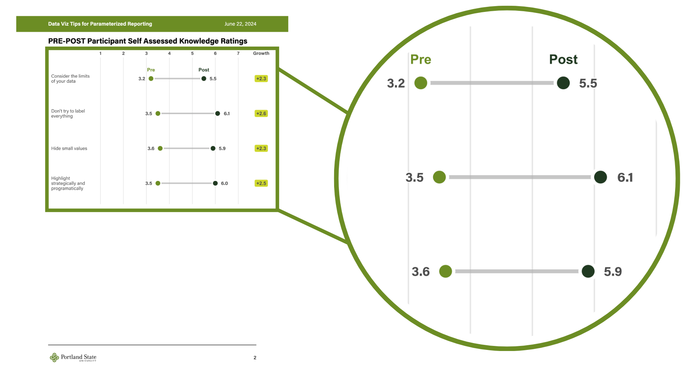

# A tibble: 4 × 4
location burden_level pct pct_formatted
<fct> <fct> <dbl> <chr>
1 Hartford Not burdened 0.409 41%
2 Hartford Moderate burden 0.223 22%
3 Hartford Severe burden 0.299 30%
4 Hartford Not computed 0.0694 <NA>
housing_cost_burden_plot(town_to_plot ="Hartford",county_to_plot ="Hartford County")
housing_cost_burden_plot(town_to_plot ="Stamford",county_to_plot ="Fairfield County")

Don’t Put Text Where it Could Be Obscured

pre_post_data
# A tibble: 2 × 6
question timing rating growth growth_formatted growth_text_position
<chr> <chr> <dbl> <dbl> <dbl> <dbl>
1 Consider the limit… Pre 1.6 NA NA NA
2 Consider the limit… Post 4.2 2.6 2.6 2.9
# A tibble: 2 × 6
question timing rating growth growth_formatted growth_text_position
<chr> <chr> <dbl> <dbl> <dbl> <dbl>
1 Consider the limit… Pre 3.5 NA NA NA
2 Consider the limit… Post 3.6 0.100 0.100 3.55
# A tibble: 2 × 4
question timing rating rating_text_position
<chr> <chr> <dbl> <dbl>
1 Consider the limits of your data Pre 3.5 3.2
2 Consider the limits of your data Post 3.6 3.9